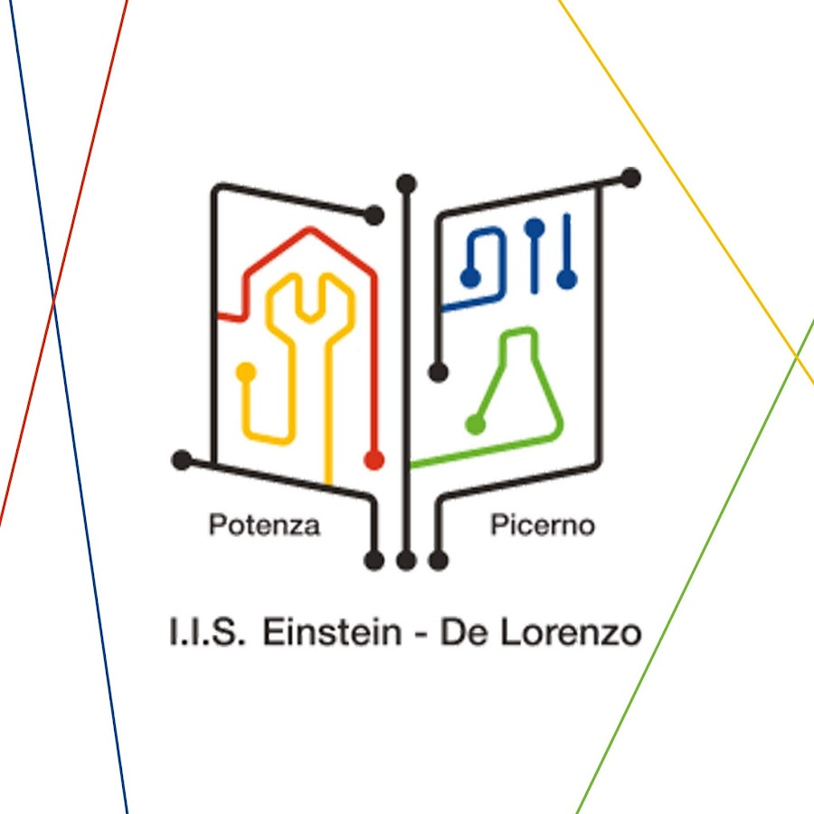

Qui potete trovare uno dei giochi programmati con scratch:
LA MIA PROFESSIONE ATTUALE E LE SCUOLE FREQUENTATE:
PROFESSIONE ATTUALE: STUDENTE
SCUOLE SUPERIORI FREQUENTATE:
-LICEO SCIENTIFICO GALILEO GALILEI
-ITIS EINSTEIN DE LORENZO

LE MIE ESPERIENZE LAVORATIVE:
ESPERIENZE LAVORATIVE:
-ALTERNANZA SCUOLA LAVORO PRESSO STUDIO DOMINO FORMAZIONE (POTENZA PZ)
-ANIMATORE PRESSO IL CENTRO ESTIVO "GREST" (PICERNO PZ)
SPORT PRATICATI:
ATTIVITÀ SPORTIVE PRATICATE:
-NUOTO
-CICLISMO
-JUDO
Video descrittivi sugli sport praticati:
I MIEI PROGETTI SCOLASTICI:
PROGETTI HTML E ARDUINO:
-CHRISTMAS TREE PROJECT (ARDUINO)
-LA TORRE DI HANOI (HTML)
-PREGETTO DRAGON BALL (HTML + SCRATCH)